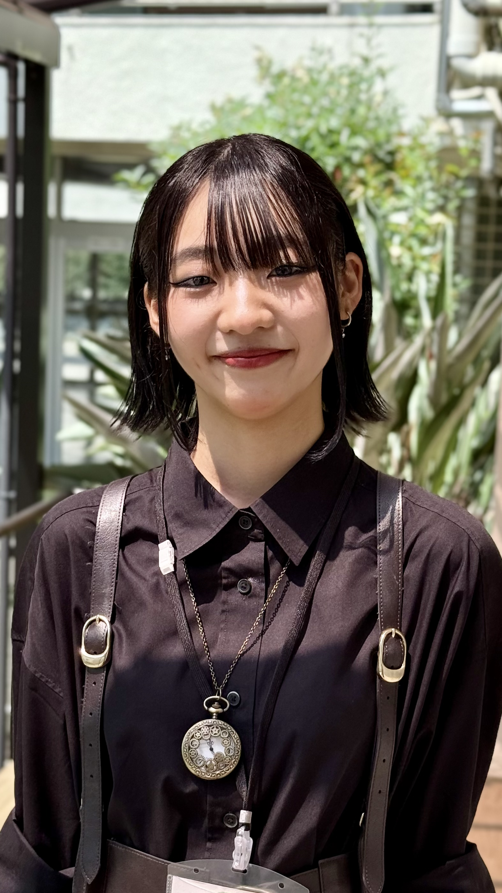
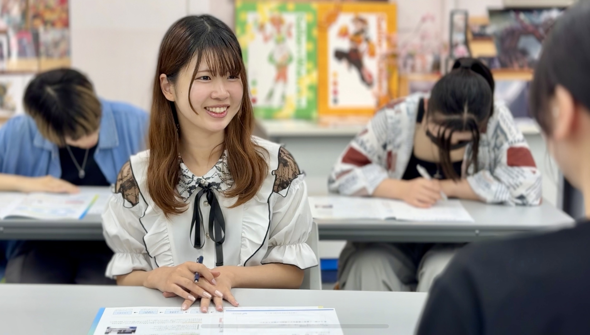

製菓デザイン学科

2年
S・Hさん
初めての見学でも、先輩が距離近く話してくれて安心できました。作品づくりを通じて“楽しい”が増えました。


2年
初めての見学でも、先輩が距離近く話してくれて安心できました。作品づくりを通じて“楽しい”が増えました。
1年
レトロな校舎と最新設備の組み合わせが好き。制作相談も先生がすぐに乗ってくれて心強かったです。
1年
在校生の空気感が自分に合っていた。イベントでの交流が入学の後押しになりました。

イベント開始5分前までにご来校ください。オーキャンサポーターがお出迎えしますよ♪
気になることをわかりやすくご紹介します。初めての方でも安心して聞ける内容になっています。
意外と映えスポットがあるんですよ！
入学前に感じる不安は誰もが抱えるもの。スタッフと先輩が親切にサポートします。
体験講座終了後は個別相談を随時行っております。講座の中で学科のことや将来のことなど、なんでもお気軽にご相談ください。